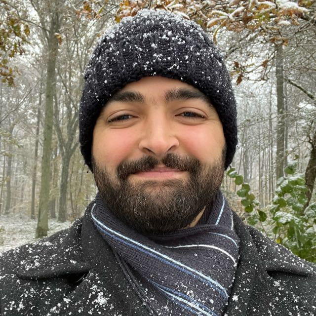

Computer Vision
Segmentation, classification and quality control on CT, MRI, X-ray and gigapixel whole-slide images, with robust representation learning.
I build robust predictive models and production-grade data pipelines for high-dimensional, multimodal medical data — from gigapixel pathology slides to CT, MRI and X-ray — with an evaluation-first mindset: calibration, out-of-distribution generalization, reproducibility.

I am a Data Scientist & Machine Learning Engineer at Deemea, where I architect automated data ingestion pipelines connected to hospital PACS (DICOM), and deploy deep learning models for image quality control, segmentation and diagnosis support in multi-centric clinical studies.
I hold a PhD in Machine Learning & AI from CentraleSupélec (Université Paris-Saclay), where I translated mathematical optimization into first-author publications at CVPR, ISBI and ICIP — and served as the bridge between ML researchers and senior pathologists to turn qualitative clinical criteria into measurable ML objectives.
From research prototypes to containerized, monitored production services.
 Python
Python PyTorch
PyTorch OpenCV
OpenCV Scikit-learn
Scikit-learn NumPy
NumPy Pandas
Pandas Docker
Docker MLflow
MLflow Streamlit
Streamlit CI/CD
CI/CD Git
Git Linux
LinuxSegmentation, classification and quality control on CT, MRI, X-ray and gigapixel whole-slide images, with robust representation learning.
Convex optimization, proximal algorithms, variational methods and inverse problems as foundations for imaging and learning.
Representation learning, weak supervision and generalization under limited annotations for biomedical applications.
Frameworks such as UNEM (CVPR 2025) that deliver strong accuracy when labels are scarce.
Learned iterative schemes and model-based architectures that remain interpretable, e.g. unrolled projected gradient for stain separation.
Tumor architecture characterization, quantitative biomarkers, stain normalization and recurrence prediction in hepatocellular carcinoma.
Calibration, uncertainty estimation, out-of-distribution generalization and interpretability for high-stakes clinical deployment.
Benchmarking, drift detection, containerized deployment and reproducible pipelines across multi-site hospital data.
ETL pipelines for terabyte-scale imaging data and PACS/DICOM integration for multi-centric clinical studies.
AI-Driven Methods in Histopathology for the Diagnosis and Prognosis of Hepatocellular Carcinoma — CentraleSupélec, Université Paris-Saclay, in collaboration with the Center for Visual Computing and Kremlin-Bicêtre Hospital. Supervised by Prof. Jean-Christophe Pesquet and Prof. Catherine Guettier, with Prof. Mounir Kaaniche and Prof. Amel Benazza-Benyahia.
Multi-scale, few-shot and transductive deep learning to perform under limited labels.
AI-derived pathology phenotypes combined with clinical variables for interpretable risk stratification.
Convex optimization and algorithm unrolling for consistent stains and stable features.
1st place out of 256 teams in the DigiLut Data Challenge for Lung Transplant Rejection (2024), organized by Hôpital Foch and Health Data Hub / Bpifrance. Carried out with CentraleSupélec, Université Paris-Saclay, Inria and OPIS.
National rank 63 / 1,773 (top 3%) in the Tunisian national engineering entrance exam (2018).
I'm looking for roles where I can architect end-to-end data pipelines and deploy scalable, impact-driven AI/ML solutions. I welcome research collaboration at the interface of healthcare, imaging and data science.